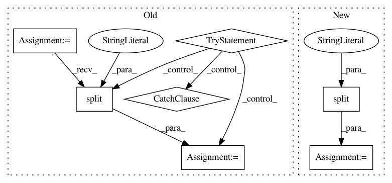

754d536974fccd0768b90938d79071ba0910714a,homeassistant/components/media_player/squeezebox.py,LogitechMediaServer,get_player_status,#LogitechMediaServer#Any#,122
Before Change
// l (album): Album, including the server"s "(N of M)"
tags = "adKl"
new_status = {}
try:
telnet = telnetlib.Telnet(self.host, self.port)
telnet.write("{player} status - 1 tags:{tags}\n".format(
player=player,
tags=tags
).encode("UTF-8"))
response = telnet.read_until(b"\n", timeout=3)\
.decode("UTF-8")\
.split(" ")
telnet.write(b"exit\n")
for item in response:
parts = urllib.parse.unquote(item).partition(":")
new_status[parts[0]] = parts[2]
except (OSError, ConnectionError) as error:
_LOGGER.error("Could not communicate with %s:%d: %s",
self.host,
self.port,
error)
return new_status
// pylint: disable=too-many-instance-attributes
After Change
if not response:
return {}
response = response.split(" ")
for item in response:
parts = urllib.parse.unquote(item).partition(":")
new_status[parts[0]] = parts[2]
return new_status
def get(self, command):
Abstract out the telnet connection.
In pattern: SUPERPATTERN
Frequency: 3
Non-data size: 7
Instances
Project Name: home-assistant/home-assistant
Commit Name: 754d536974fccd0768b90938d79071ba0910714a
Time: 2016-10-21
Author: martin@dasos.com
File Name: homeassistant/components/media_player/squeezebox.py
Class Name: LogitechMediaServer
Method Name: get_player_status
Project Name: GoogleCloudPlatform/PerfKitBenchmarker
Commit Name: 225d31587eeb9aca226158e346c8e9730777913c
Time: 2017-02-24
Author: nlavine@google.com
File Name: perfkitbenchmarker/publisher.py
Class Name:
Method Name: RepublishJSONSamples
Project Name: EpistasisLab/tpot
Commit Name: ef7e473d04352059c33af7bef48321e5dec7b3da
Time: 2015-11-13
Author: rso@randalolson.com
File Name: setup.py
Class Name:
Method Name: calculate_version